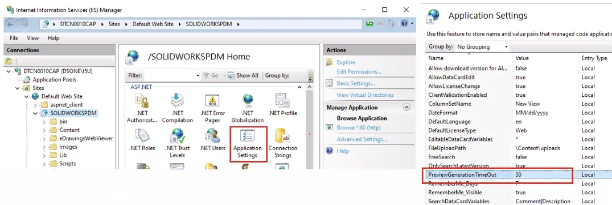

PDM WEB2预览大文件失败
PDM WEB2预览大文件失败
安装时选择
Web2预览使用eDrawings webGL，预览需要转换文件文件
大小不同转换时间不一样，文件过大转换时间太少则会造成预览超时失败
预览超时失败常见报错
抱歉，没有对此文件可用的预览
预览失败，在可以确定所请求的信息之前，进程必须退出
为eDrawings文件转换失败
没有可用的预览，输出进程超时

增加预览转换超时时间，以便预览有足够长的时间来转换完成，不被超时影响到lIS>默认站点>SOLIDWORKSPDM>应用程序设置>PreviewGenerationTimeOut>把值往高点设置，例如100.200.500….
